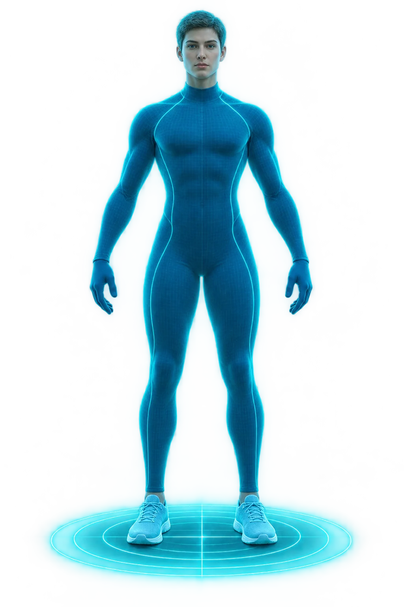
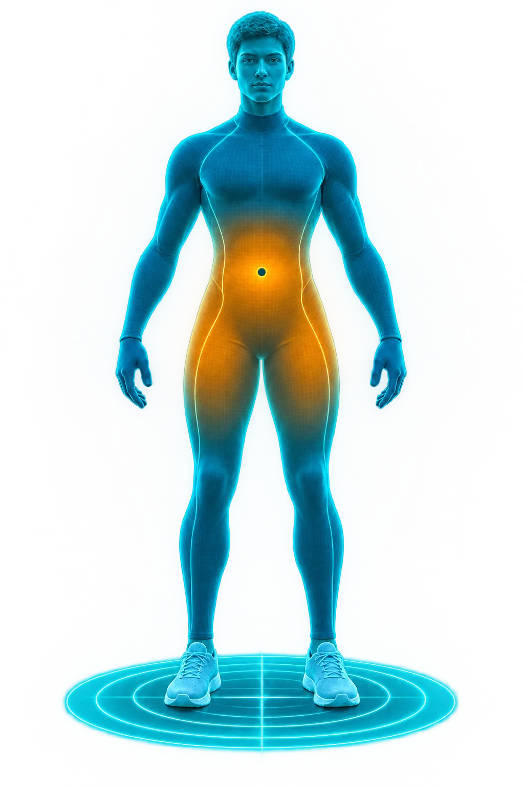

Nenhuma pesagem em jejum neste histórico. Desmarque “Só jejum” para ver as demais.
PAINEL BIOMÉTRICO
HOLO-BODY 3D ILUSTRAÇÃO


Ilustração corporal
Holograma
Atenção
Índice elevado
RCQ: --
INSPEÇÃO DOS INDICADORES
--
--
--
Base de referência • Toque nos indicadores para alternar
--
--
1. O que é e como é estimado
2. Referências por sexo e idade
3. Interpretação e correlações
4. Como acompanhar
A bioimpedância produz estimativas. A ilustração 3D é esquemática: formas e cores não representam um exame por imagem, um mapa térmico real nem a localização individual de gordura. Os resultados não determinam causas ou diagnósticos isoladamente.
Meta Gordura %22.0%
Meta Músculo %34.0%
Meta VisceralNível 5